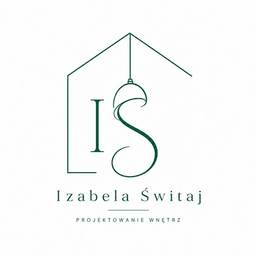

Mieszkanie z kuchnią i łazienką
Neo modernizm
Proste linie, pojemna zabudowa i czytelny podział stref pomagają zachować porządek bez rezygnowania z ciepła drewna i naturalnej zieleni.

Iza Świtaj projektantka wnętrzProjektowanie wnętrz online i stacjonarnie
Pomagam uporządkować pomysły, zaplanować funkcjonalny układ i podjąć dobre decyzje przed remontem, zakupami lub zmianą aranżacji. Możemy zacząć od konsultacji, a jeśli zakres tego wymaga - przejść do pełniejszej koncepcji wnętrza.
Wybrane projekty
Przykłady koncepcji pokazują, jak można uporządkować układ, przechowywanie, światło, materiały i codzienne korzystanie z wnętrza. Każdy projekt traktuję jako punkt wyjścia do rozmowy o realnych potrzebach domowników.
Mieszkanie z kuchnią i łazienką
Proste linie, pojemna zabudowa i czytelny podział stref pomagają zachować porządek bez rezygnowania z ciepła drewna i naturalnej zieleni.
Salon z aneksem i home office
Aneks kuchenny, wypoczynek i miejsce do pracy tworzą jedną spójną przestrzeń, a przemyślana zabudowa pozwala wygodnie zmieniać jej funkcję w ciągu dnia.
Mieszkanie bibliofilów
Zabudowa na książki porządkuje strefę dzienną i staje się częścią jej charakteru, zachowując spokojną paletę oraz wygodne codzienne użytkowanie.
Jestem projektantką wnętrz po mocnym przygotowaniu dyplomowym i latach zainteresowania aranżacją. W pracy porządkuję potrzeby, sprawdzam funkcję i przekładam styl życia na konkretne decyzje: układ, przechowywanie, oświetlenie, materiały i wyposażenie.
Dla kogo?
Nie musisz od razu zamawiać pełnego projektu. Czasem wystarczy uporządkować kierunek, sprawdzić układ albo skonsultować jedną decyzję, która blokuje remont.
Pomagam zaplanować układ, instalacje, światło i kolejność decyzji, zanim wejdzie ekipa.
Porządkuję inspiracje i sprawdzam, co naprawdę pasuje do mieszkania, budżetu i sposobu życia.
Pracuję nad kuchnią, łazienką, pokojem dzieci albo salonem, który potrzebuje konkretnego planu.
Sprawdzam meble, kolory, płytki, oświetlenie lub układ, zanim zamówisz materiały.
Oferta
Po krótkiej rozmowie ustalamy, czy potrzebujesz konsultacji, inwentaryzacji, układu funkcjonalnego, wizualizacji, dokumentacji technicznej czy zestawienia materiałów. Każdy zakres omawiam indywidualnie, bo zależy od metrażu, złożoności inwestycji i stanu materiałów wyjściowych.
Krótka rozmowa o przestrzeni, problemie i tym, jaki rodzaj wsparcia ma sens.
Spotkanie na miejscu, omówienie założeń, ocena stanu istniejącego i ustalenie zakresu prac.
Pomiary, dokumentacja zdjęciowa i rzut 2D stanu istniejącego z elementami stałymi.
Warianty układu, rozmieszczenie mebli, stref użytkowych, komunikacji i przechowywania.
Stylistyka, kolorystyka, materiały, wyposażenie i fotorealistyczne widoki po akceptacji układu.
Rysunki do realizacji oraz zestawienie materiałów, wyposażenia, ilości i modeli.
Pierwsza konsultacja
To spokojne 30 minut online lub telefonicznie. Bez zobowiązań i bez presji na pełny projekt. Chcę zrozumieć problem i wskazać sensowny następny krok.
Umów bezpłatną konsultacjęPrzed rozmową
Nie musisz mieć wszystkiego. Im więcej konkretów, tym szybciej ocenię problem.
Proces i zakres
Nie każdy projekt wymaga wszystkich etapów. Czasem wystarczy konsultacja lub układ funkcjonalny, a przy większym zakresie przechodzimy kolejno przez pomiary, wizualizacje, dokumentację i zestawienia.
Przygotowanie
Rozpoczynam pracę z klientami komercyjnymi po przygotowaniu dyplomowym i latach zainteresowania projektowaniem wnętrz. Łączę estetykę z funkcją: ergonomią, przechowywaniem, światłem, spójną paletą materiałów i codziennym użytkowaniem przestrzeni.
Nie narzucam gotowego stylu. Najpierw chcę zrozumieć, kto będzie mieszkał w danym wnętrzu, jak wygląda dzień domowników i gdzie dziś pojawia się chaos, niewygoda albo ryzyko nietrafionych zakupów.
Pierwsze terminy
To dobry moment, jeśli planujesz remont, zmianę aranżacji albo chcesz uporządkować decyzje przed zakupem mebli, płytek, oświetlenia lub wyposażenia.
Zarezerwuj terminFAQ
Tak. Konsultacja może być jednorazową pomocą albo pierwszym krokiem do szerszego projektu.
Nie. Rzut pomaga, ale na start wystarczą zdjęcia, orientacyjne wymiary i opis problemu.
Tak. Konsultacje i wiele etapów koncepcji można przeprowadzić online na podstawie zdjęć, planów i rozmowy.
Tak. Jedno trudne pomieszczenie to bardzo dobry zakres na konsultację albo metamorfozę.
Tak, jeśli taki zakres ustalimy. Może to obejmować meble, oświetlenie, materiały i inspiracje zakupowe.
Tak, przy większym zakresie po omówieniu potrzeb, budżetu, dostępnych materiałów i harmonogramu.
Najlepiej zanim zamówisz materiały, meble lub rozpoczniesz prace. Wtedy najłatwiej uniknąć kosztownych zmian.
Kontakt
Najprościej zacząć od bezpłatnej 30-minutowej konsultacji. Jeśli wolisz, możesz też napisać wiadomość z krótkim opisem pomieszczenia.